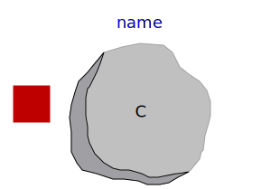
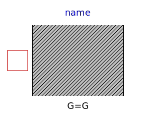
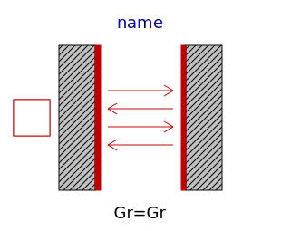
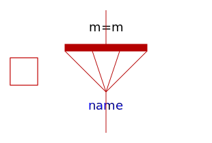
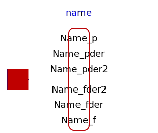
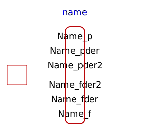

| Name | Description |
|---|---|
|  HeatCapacitor | Lumped thermal element storing heat |
|  ThermalConductor | Lumped thermal element transporting heat without storing it |
| Lumped thermal element transporting heat without storing it | |
| Lumped thermal element for heat convection (Q_flow = Gc*dT) | |
| Lumped thermal element for heat convection (dT = Rc*Q_flow) | |
|  BodyRadiation | Lumped thermal element for radiation heat transfer |
|  ThermalCollector | Collects m heat flows |
|  GeneralHeatFlowToTemperatureAdaptor | Signal adaptor for a HeatTransfer port with temperature and derivative of temperature as outputs and heat flow as input (especially useful for FMUs) |
|  GeneralTemperatureToHeatFlowAdaptor | Signal adaptor for a HeatTransfer port with heat flow as output and temperature and derivative of temperature as input (especially useful for FMUs) |